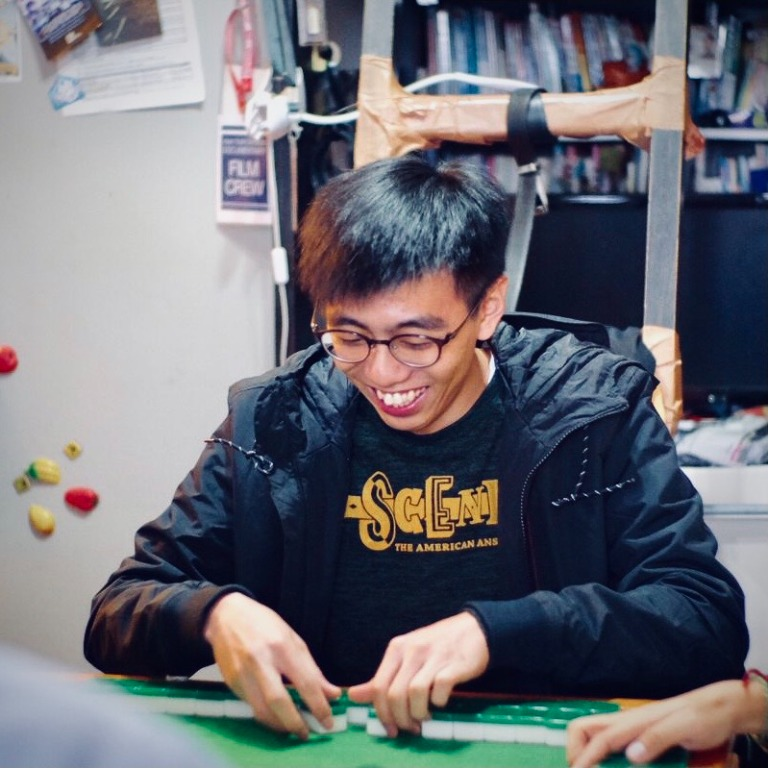

8th Joint University Investment Game 2023
Issued by CHIEF · Sep 2023
No. 57 / Top 100 Performance
Hello, I’m
I am a BBA-FAFT STU, and I am learning, creating, and growing one step at a time.

About Me
I am a curious learner who enjoys exploring new ideas, building useful things, and improving my skills with practice and patience.
I am currently studying as a BBA-FAFT STU, and I am excited to keep learning, collaborating, and creating projects that reflect my interests.
Skills and Interests
Issued by CHIEF · Sep 2023
No. 57 / Top 100 Performance
Use this card to describe another idea, class task, or experiment you can update later.
Contact